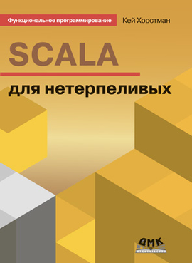

Часть 1. Введение в Scala. Case классы и pattern matching
Страничка курса: https://maxcom.github.io/scala-course-2020/
План
- Орг. вопросы.
- Почему Scala? Обзор курса.
- Средства разработки.
- Обзор синтаксиса.
- Case-классы.
- Алгебраические типы.
- Pattern matching.
- Домашнее задание.
Максим Валянский
окончил ВМиК МГУ в 2001 году;
занимаюсь разработкой ПО сколько себя помню;
работаю архитектором в компании
«Ростелеком-Солар».
Лекции
- Каждую пятницу в 17:30.
- Две части по ~40минут, перерыв 5 минут.
- Видео будет на youtube через 1-2 дня.
Семинары
- Каждую среду в 17:30.
- Свои ноутбуки!
- Заранее установить ПО (расскажу).
Материалы курса и чат
Слайды, примеры программ и другие файлы доступны в репозитарии https://github.com/maxcom/scala-course-2020. Содержимое будет пополняться по ходу курса.
Для обсуждений и вопросов по курсу используем Telegram чат @scalacourse2020 (доступ по ссылке).
Почему Scala?
До Scala в продукте были:
Scheme (Lisp), OCaml,
Java, Python, C++ и др.
Хотелось:
- Качественную платформу, средства разработки и библиотеки.
- Функциональное программирование*
* хотя каждый разработчик по своему понимает что такое ФП - "Крутые" библиотеки/framework'и
В момент перехода для нас это были Akka и Play Framework
Мы верим что функциональной программирование сделает наш софт качественнее, а разработку – более быстрой и предсказуемой.
Первый Scala компонент у нас появился осенью 2013 года в качестве эксперимента.
Это была распределенная система хранения бинарных данных - "файловое хранилище".
По результатам вывода в production эксперимент посчитали удачным.
Сейчас довольно большая часть продукта написана на Scala, и у нас много планов по развитию.
Scala — мультипарадигмальный язык программирования, спроектированный кратким и типобезопасным для простого и быстрого создания компонентного программного обеспечения, сочетающий возможности функционального и объектно-ориентированного программирования.
Работающий на JVM и хорошо интегрирующийся с существующим Java кодом
обо всём языке говорить долго
рассмотрим базовые возможности языка
и перейдем к практике
Состав курса
- Введение в программирование на Scala
- Потоки и асинхронное программирование.
- Разработка и использование веб-сервисов
Средства разработки
Есть много вариантов, мы будем использоватьIntellij IDEA Community Edition + Scala plugin
- Ставим IDEA, запускаем
- Добавляем Scala plugin (configure -> plugins)
- Создаем новый проект Scala
- Выбираем sbt; версии самые новые
(Scala 2.13.1; sbt 1.3.7)
Live demo
build.sbt -- настройки сборки
project -- еще настройки сборки
project/target -- кеш компилятора и вспомогательные файлы
src -- исходные файлы и ресурсы
src/main -- основной код
src/main/scala -- основной код на Scala
src/test -- исходные файлы и ресурсы тестов
src/test/scala -- код тестов на Scala
target -- результат компиляции
(live demo)
Синтаксис Scala: смесь Си + ML.
"Better Java", C, Python, ...
справочник по языку

или google + stackoverflow
Hello, World!
object HelloWorld extends App {
println("Hello, world!")
}
(live demo)
// класс для JVM
// наследование от App
object HelloWorld extends App {
println("Hello, world!")
}
(live demo)
Не удается запустить в IDEA?
Отключите Gradle plugin
https://youtrack.jetbrains.com/issue/IDEA-228180
Live demo
Блоки вместо выражений
object HelloWorld extends App {
println({
"Hello, world!"
})
}
(live demo)
object HelloWorld extends App {
println({
var str = "Hello, " // переменная
val add = "world!" // константа
str += add
str // "возвращается" последнее значение в блоке
})
}
(live demo)
Иммутательность "по-умолчанию":
- var только если будем менять
- изменяемые коллекции и др. только когда нужно
Live demo
объявляем функцию
object HelloWorld extends App {
println({
def square(x: Int) = x * x
square(10)
})
}
(live demo)
def square(x: Int) = x * xval f: (Int => Int) = squareif тоже является выражением:
def abs(x: Int) = {
if (x >= 0) {
x
} else {
-x
} // и никакого "return"!
}
Типы выводятся в:
- val и var
- возвращаемых значениях функций и методов
(кроме рекурсивных)
Рекомендуется указывать типы:
- публичных API
- var
Live demo
while
var a: Int = 0
while (a<10) {
a += 1
println(a)
} // бывает еще do { ... } while
(live demo)
for - не цикл, но "прикидывается" им:
for (i <- 0 to 10) {
println(i)
}
подробнее о for на третьем занятии
(live demo)
for (i <- List(1, 2, 3)) {
println(i)
}
(live demo)
for .. yield - "List comprehension" из Python
println(for (v <- List(1, 2, 3)) yield {
v * v
})
(live demo)
с условием
for {
v <- List(1, 2, 3, 4) if v%2 == 0
} yield {
v * v
}
(live demo)
писать на Scala - не сложно
Перерыв 5 минут
Домашние задания: независимые или "большой" проект?
решим вместе на второй лекции
Пара (tuple)
Комбинация из двух значений:
val pair: (Int, Int) = (1, 2)
// Tuple2[Int, Int]
деконструкция
val (first, second) = pair
бывают еще "тройки" и более - до 22
Немного о коллекциях
Подробно устройство коллекций рассмотрим на втором занятии.Seq[T] – общий тип для коллекций, имеющих определенный порядок (списки, массивы, вектора и т.п.)
ArrayBuffer[T] – аналог ArrayList из Java
Vector[T] – неизменяемый аналог ArrayList
val buffer = ArrayBuffer[Int](1, 2, 3)
buffer += 4 // добавление элемента
buffer(1) // получение элемента
// buffer еще и функция
val f: (Int ⇒ Int) = buffer
У стандартных коллекций много полезных функций
Справка на Vector: scaladoc.
val v = Vector(1, 2, 3, 4)
val (first, second) = v.splitAt(v.length / 2)
// first == Vector(1,2)
// second == Vector(3,4)
Case-классы
Механизм для создания собственных
типов для данных.
case class Address(`type`: String, value: String) {
def toStringAddress = s"${`type`}:$value"
}
Это не ООП! Данные не изменяемые, обычно не содержат бизнес-логики.
Собственный тип лучше, чем просто значения:
Address(`type`, value)против пары
(String, String)Собственный тип можно заводить и для простых значений, например:
case class UserId(uuid: UUID)case class GroupId(uuid: UUID)типы позволяют не путать значения между собой
Что есть в case class?
- геттеры для полей
- toString
- equals и hashcode
- создание без "new"
- экстрактор
- сериализация, product и еще...
Экстракторы
Можно разобрать класс обратно:
val address = Address("email", "abuse@sportloto.ru")
val Address(_, email) = address
object Address {
def apply(`type`: String, value: String) =
new Address(`type`, value)
def unapply(address: Address): Option[(String, String)] =
Some((address.`type`, address.value))
}
Алгебраические типы
Case классы можно объединить в иерархию
sealed trait Expr
case class Number(value: Int) extends Expr
case class Plus(lhs: Expr, rhs: Expr) extends Expr
case class Minus(lhs: Expr, rhs: Expr) extends Expr
Pattern matching
def value(expression: Expr): Int = expression match {
case Number(value) ⇒ value
case Plus(lhs, rhs) ⇒ value(lhs) + value(rhs)
case Minus(lhs, rhs) ⇒ value(lhs) - value(rhs)
}
val result = value(Plus(Number(2), Number(2)))
Pattern matching - альтернатива полиморфизму на методах:
trait Expr {
def eval: Int
}
case class Number(value: Int) extends Expr {
override val eval = value
}
case class Plus(lhs: Expr, rhs: Expr) extends Expr {
override def eval = lhs.eval + rhs.eval
}
case class Minus(lhs: Expr, rhs: Expr) extends Expr {
override def eval = lhs.eval - rhs.eval
}
Plus(Number(2), Number(2)).evalДве модели:
- Фиксированная "схема" данных, произвольные операции – PM
- Фиксированные операции, большое разнообразие объектов – ООП
Сделаем более правильное определение ADT
val number: Expr = Number(3)
val expr = Plus(Number(2), Number(2))
val buffer = ArrayBuffer(Number(1), expr)
// не компилируется
buffer += number
потому что тип buffer вот такой:
ArrayBuffer[Product with Serializable with Expr]
а изменяемые коллекции - инвариантные
запрещаем наследование - "final case class"
Более правильная версия примера
sealed trait Expr extends Product with Serializable
final case class Number(value: Int) extends Expr
final case class Plus(lhs: Expr, rhs: Expr) extends Expr
final case class Minus(lhs: Expr, rhs: Expr) extends Expr
Option[T]
Тип с двумя вариантами:- Some[T] - контейнер для одного значения
- None - значение отсутствует
более безопасная замена null
val v = Vector(1, 2, 3, 4, 5)
val r: Option[Int] = v.find(x => x > 2)
// r = Some(3)
плохой вариант работы с Option:
if (r.isDefined) {
println(r.get) // бросает исключение если значения нет
}
// 1
r match {
case Some(k) ⇒ println(k)
case None ⇒ println("None")
}
//
// 2
println(r.getOrElse("None"))
Try[T]
Обработка исключений в Scala похожа на Java:
try {
1 / 0
} catch {
case ex: ArithmeticException ⇒
println(ex.getMessage)
1
}
try - тоже выражение, возвращает последнее значение
- хотим положить в список и потом обработать
- передать между потоками
- ...
Тип Try
- Success - содержит значение
- Failure - содержит исключение
получим его так:
val result: Try[Int] = Try {
1 / 0
}
import scala.util.{Random, Try}
// fill - функция с двумя блоками параметров
// fill[A](n: Int)(elem: => A)
val vector = Vector.fill(10) {
Try {
1 / Random.nextInt(5)
}
}
vector.count(x => x.isSuccess)
Могут ли функции возвращать Try?
Да, но это "антипаттерн".
Either[A, B]
Выбор из двух значений:- Right(x) - "правильное" значение
- Left(y) - "левое" значение
Домашнее задание
Задание 1: merge sort
Реализуем сортировку слияниемдля Vector[Int]
Описание алгоритма: на wikipedia
Неплохая визуализация
(надо выбрать "merge sort")
Задание 2: top-n sort
Ищем N самых меньших значений, не выполняя полной сортировки. Повторяющиеся значения не теряем.
Один проход по вектору, собираем N результатов по ходу движения.
Используем всё что найдем в стандартной библиотеке.
Решение должно давать те же результаты что и
topn(input: Vector[Int], n: Int) = input.sorted.take(n)
только без полной пересортировки
Задание 3: уникальный merge sort
Модифицируем merge sort так, чтобы он выдавал только уникальные значения.
Дубли убираем в при merge.
Семинар 29-го января
Тема: разбор решений и проблем.
Unit-тесты и scalacheck.
Решение ждем в понедельник, в крайнем случае к семинару.
Простой вариант - m.valyanskiy@solarsecurity.ru.
Присылайте только исходники; код должен работать!
"Сложный" вариант - используем gitlab.com:
- Зарегистрируйтесь на gitlab.com (это бесплатно)
- Заводите приватный репозиторий (свой под каждое задание)
- Дайте доступ @maximvalyanskiy и @nsolely
- Киньте ссылку на gitlab мне на почту
Напоминаю:
- Страничка курса:
https://maxcom.github.io/scala-course-2020/ - Семинар в среду в 17:30
- Подключайтесь к чату в Telegram @scalacourse2020 (доступ по ссылке).
Пара слов о Судоку*
дополнительная часть, если успеем
“Always code as if the guy who ends up maintaining your code will be a violent psychopath who knows where you live”
Всегда думайте о том, что
будет дальше с вашим кодом.
Две проблемы:
- Сложный и запутанный код
- Лишние абстракции
KISS («Keep it simple, stupid»)
Большинство систем работают лучше всего, если они остаются простыми, а не усложняются.
Напоминаю:
- Страничка курса:
https://maxcom.github.io/scala-course-2020/ - Семинар в среду в 17:30
- Подключайтесь к чату в Telegram @scalacourse2020 (доступ по ссылке).